免费，没有广告
FIH免费游玩，里面一条广告都没有。
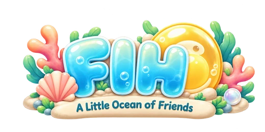
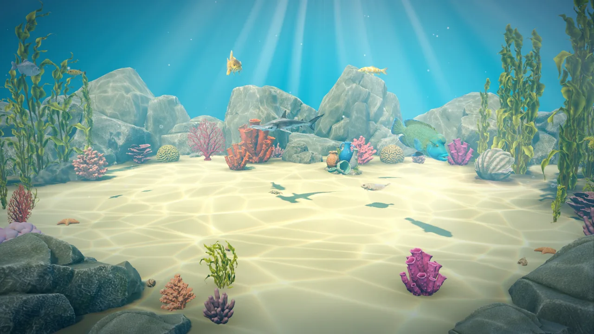
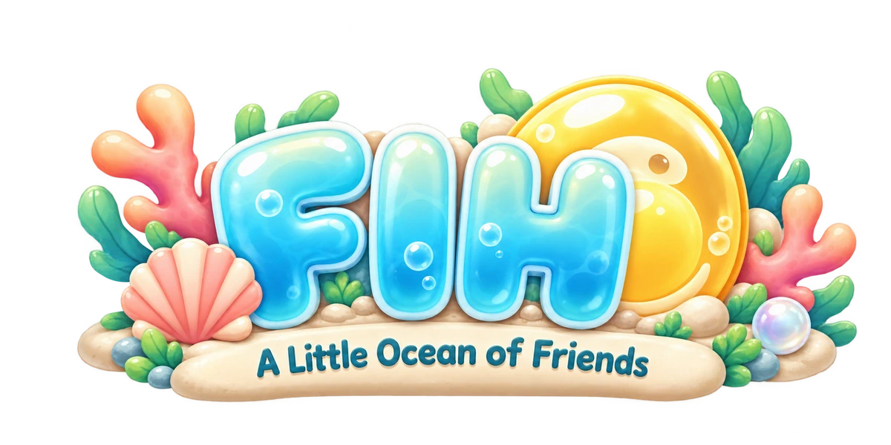
一款满是小鱼的休闲放置游戏。鱼儿负责挖，你来孵化鱼卵。就算你不在，珊瑚礁也会继续成长。
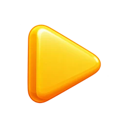
观看预告片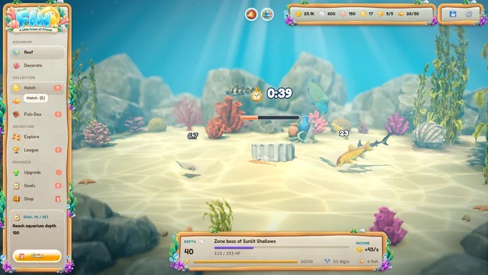
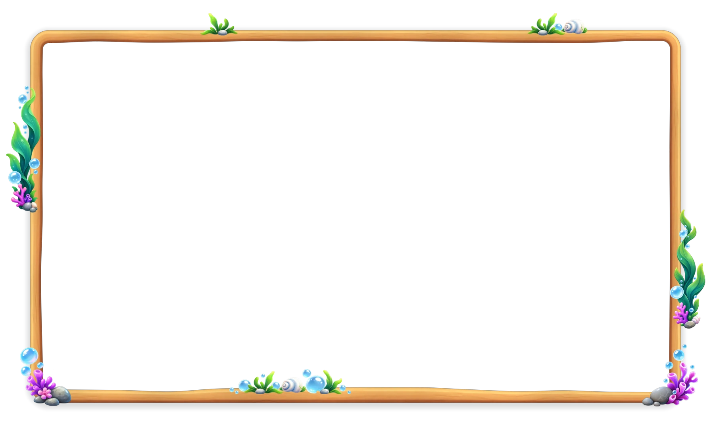
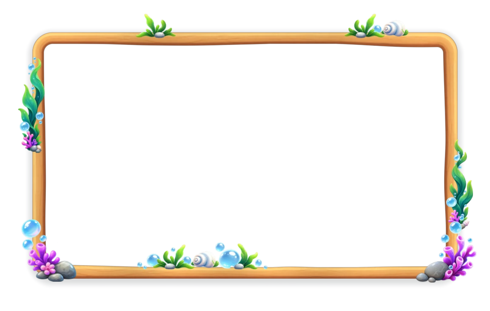
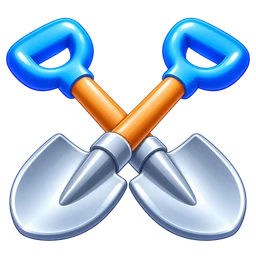
最多六条鱼会挖开你珊瑚礁里的沙堆。沙堆下面埋着金币、卵和古物。
一个沙堆接一个沙堆，越挖越深：一共10多个海层，从阳光浅滩一直到深渊，途中还有小首领和海层首领。
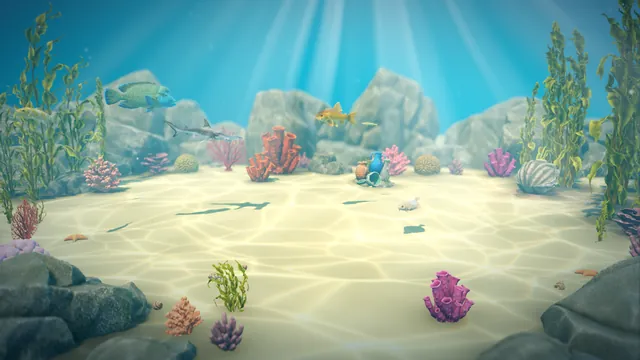
阳光浅滩深度1到40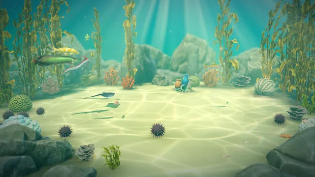
海藻森林深度41到80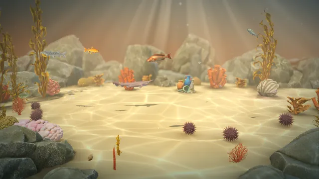
落日斜坡深度81到120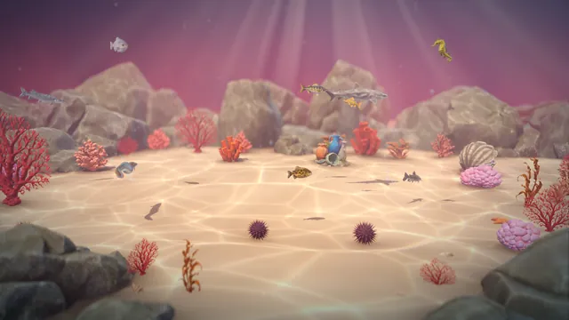
绯红珊瑚礁深度121到160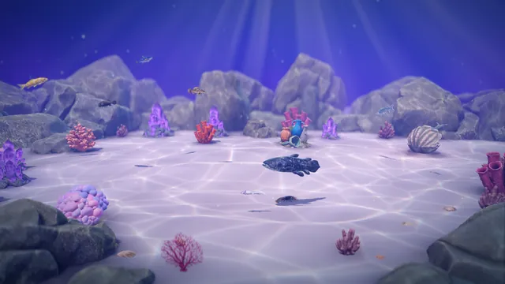
紫晶洞窟深度161到200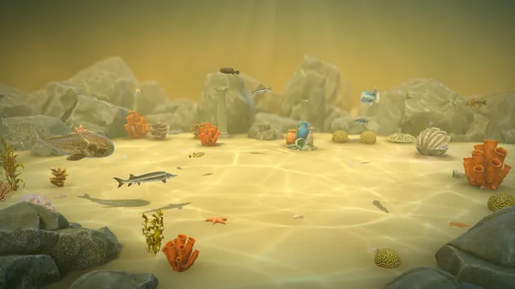
黄金遗迹深度201到240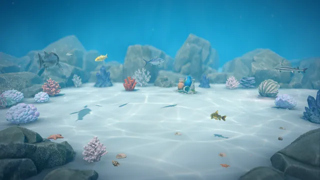
霜之花园深度241到280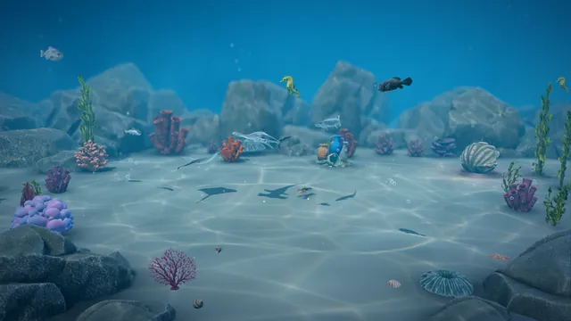
暮光珊瑚礁深度281到320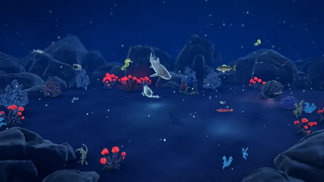
午夜带深度321到360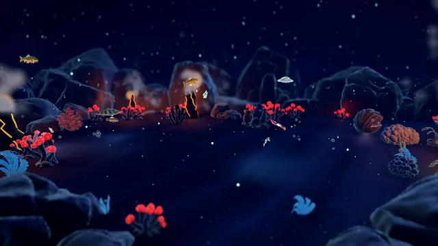
深渊深度361到400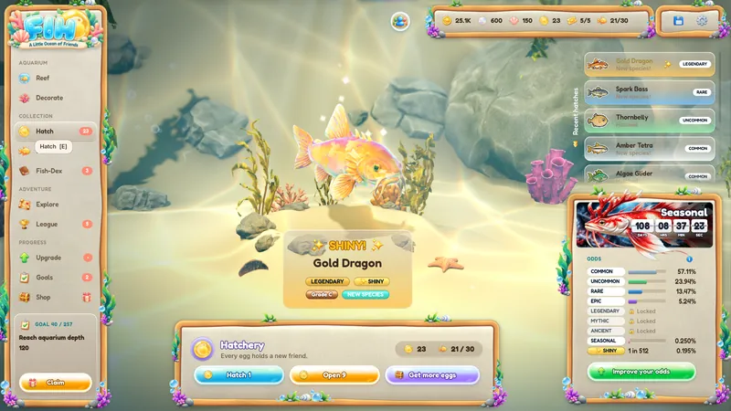
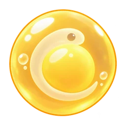
在孵化场孵化你的卵，认识一条新鱼。很多是普通，少数是神话，偶尔还会孵出闪光。
孵化之前，屏幕上就写着准确的概率。每个季节还有它自己的稀有季节鱼。
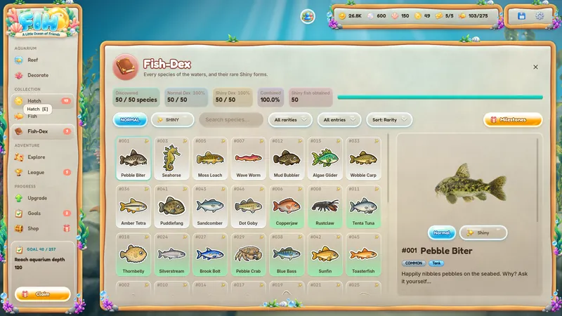
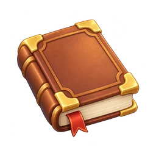
把鱼图鉴填满，普通的鱼填一遍，闪光的再填一遍。
让两条同种的鱼结成羁绊，其中一条就会变强。把你最喜欢的鱼放进水族箱，它们会在你的珊瑚礁里游来游去。
在探索中，三条鱼组成的队伍沿着藏宝图穿过八片区域，从阳光浅滩到远古海洋神殿。鱼儿自己战斗，你来挑选队伍。
每片区域有十个关卡，最后一关是首领。每次胜利都能得到金币，每打败一个首领就开启一片新区域。
在珊瑚礁联赛里，你的三条鱼组成的队伍会迎战其他队伍。每次胜利都能涨积分，靠着积分一路升过六个联赛，从沙联赛直到利维坦。
攀升的路上，你能拿到卵、贝壳和金币。每到新赛季，攀升又重新开始。
把灯塔、珊瑚、古老的陶罐和宝箱摆在沙堆周围。很多装饰还会带来一点小加成。
去看看Steam好友的珊瑚礁，互相借一条鱼。
关掉游戏，你的鱼还会继续挖一阵子。等你回来，金币和卵已经在等你了。
277个节点的升级树、每日目标和每周目标，再加上69个成就，让你总有事情可做。召唤大潮之后，你会带着换取永久祝福的珍珠，从最上面重新下潜。
FIH免费游玩，里面一条广告都没有。
每一条鱼和每一条闪光，不花钱都能得到。
孵化一颗卵之前，你就能看到准确的概率。
游戏里有一个商店，给想节省时间或支持游戏的玩家。要得到所有的鱼，商店里的东西一样都不需要。
FIH将在Steam上推出Windows版，免费游玩。第一颗卵已经在等你了。
支持语言 英语、德语、法语、西班牙语、葡萄牙语（巴西）、俄语、日语、韩语、简体中文